Pemandu Lokal Berlisensi Resmi
Dipandu oleh warga asli Kintamani yang bersertifikat resmi, paham setiap jengkal rute pendakian, serta ramah dan siap membantu mengabadikan foto-foto terbaik Anda.
KEUNGGULAN LAYANAN
Komitmen kami untuk memberikan petualangan pendakian yang paling aman, nyaman, dan berkesan.
Dipandu oleh warga asli Kintamani yang bersertifikat resmi, paham setiap jengkal rute pendakian, serta ramah dan siap membantu mengabadikan foto-foto terbaik Anda.
Mobil antar-jemput dan guide pendakian adalah khusus untuk Anda & rombongan saja. Tidak perlu terburu-buru atau menyesuaikan dengan ritme orang asing.
Seluruh tarif dihitung transparan via Kalkulator Harga. Tidak ada biaya tersembunyi (hidden fees) atau paksaan belanja saat perjalanan.
PENGALAMAN TERBAIK DI BALI
Gunung Batur merupakan gunung berapi aktif di Kintamani yang menawarkan pemandangan panorama alam spektakuler. Dengan ketinggian 1.717 mdpl, pendakian ini relatif ramah untuk pendaki pemula namun tetap memberikan sensasi petualangan yang luar biasa.
Menyaksikan matahari terbit berwarna keemasan di atas garis awan dengan latar belakang Gunung Agung & Gunung Rinjani Lombok.
Menikmati sarapan hangat berupa telur dan pisang rebus yang dimasak langsung di celah uap vulkanik alami gunung.
Didampingi oleh guide warga lokal Kintamani yang ramah, siap membawakan perlengkapan, dan membantu mengambil foto terbaik.
Sekitar 5–6 jam
Private Car
Menengah
Termasuk
Customize your adventure, calculate your total price, and secure your Mount Batur trekking experience in just a few steps.
Choose your preferred trekking date and number of participants.
Choose your pickup option.
Add more adventure to your trip.
Two beautiful stops at no additional tour cost.
Prices are estimates for the selected options.
01.15–02.45 WITA
Penjemputan privat di hotel atau vila. Waktu penjemputan menyesuaikan zona akomodasi; sopir akan mengonfirmasi detail melalui WhatsApp pada H-1.
03.20 WITA
Bertemu pemandu lokal, mempersiapkan perlengkapan trekking, dan mengikuti pengarahan singkat sebelum pendakian.
03.30 WITA
Memulai perjalanan melalui jalur pendakian dengan tempo yang disesuaikan dengan kondisi dan kemampuan peserta.
04.15 WITA
Beristirahat sejenak, mengatur napas, dan minum air sebelum melanjutkan pendakian.
04.25–05.30 WITA
Melanjutkan pendakian menuju area puncak sambil menikmati suasana pagi di Gunung Batur.
05.30 WITA
Tiba di area puncak Gunung Batur dan bersiap menikmati pemandangan matahari terbit.
06.00–07.00 WITA
Menikmati matahari terbit, berfoto, dan sarapan hangat seperti telur serta pisang rebus yang dimasak menggunakan uap panas vulkanik, disertai minuman hangat sesuai paket.
07.00–07.30 WITA
Menjelajahi area sekitar kawah utama dengan mengikuti arahan pemandu dan kondisi jalur saat itu.
07.30–08.40 WITA
Turun gunung bersama pemandu melalui jalur yang ditentukan hingga kembali ke titik awal pendakian.
08.40–09.00 WITA
Mengembalikan perlengkapan dan menyelesaikan aktivitas di basecamp. Jika memilih paket dengan transfer, perjalanan kembali ke hotel mengikuti pengaturan transportasi.
CLEAR & TRANSPARENT SERVICE
Periksa fasilitas yang sudah termasuk dan biaya yang menjadi tanggungan pribadi sebelum memulai petualangan Anda.
Tidak perlu dibawa: Air mineral, headlamp/senter, dan tongkat trekking sudah disediakan oleh AWAN TREKKING sebagai bagian dari paket.
The trekking experience generally takes around 5–6 hours, depending on the pace of the group, trail conditions, and time spent at the summit.
It can be suitable for beginners with a reasonable level of fitness. The route includes uphill walking on uneven terrain, so take your time and follow your guide’s instructions.
Yes. You can select Hotel Pick-Up when booking. The round-trip transfer fee depends on your accommodation area and will be confirmed by our team. You can also choose to meet at the designated meeting point.
Pick-up time depends on your location. Our team will confirm the schedule and share the driver’s contact details via WhatsApp before the activity.
Breakfast, mineral water, a headlamp or flashlight, and a trekking pole are included in the trekking package as listed in the package details.
Bring suitable trekking or sports shoes, a warm jacket, a camera or phone, sunscreen, a small bag, personal medication if needed, and a change of clothes if you wish. Mineral water, a headlamp or flashlight, and a trekking pole are provided.
Optional activities may be available depending on the package. Select the activity you want during booking and check the displayed additional costs before confirming.
Choose your package and activity date, enter your booking details, and submit the form to contact AWAN TREKKING through WhatsApp. Our team will confirm the arrangements with you.
Cash payment is commonly used. Please confirm the payment arrangement with our team when your booking is discussed.
Safety comes first. Your guide or the operator may adjust the itinerary if weather or trail conditions require it. Please follow the team’s guidance and contact us if you have questions before your activity.
Make your Bali adventure even more memorable. Explore our other experiences and contact our team for package details and availability.
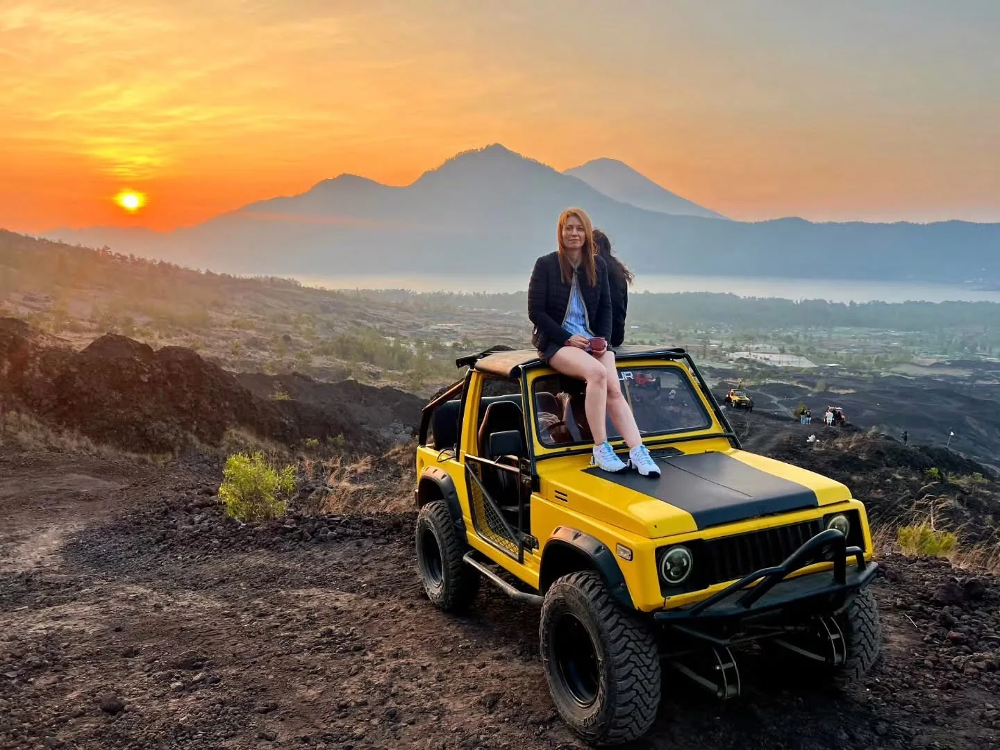
Jeep SunriseEnjoy Mount Batur sunrise from a 4x4 Jeep, with options for scenic volcanic stops.
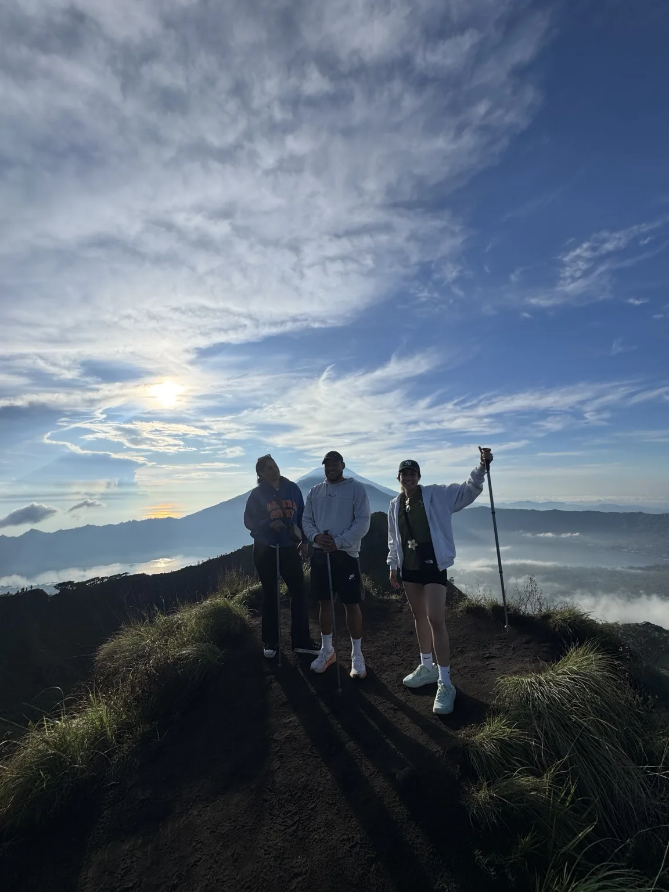
Daytime TrekkingExplore Mount Batur in daylight with volcanic scenery and a local trekking guide.
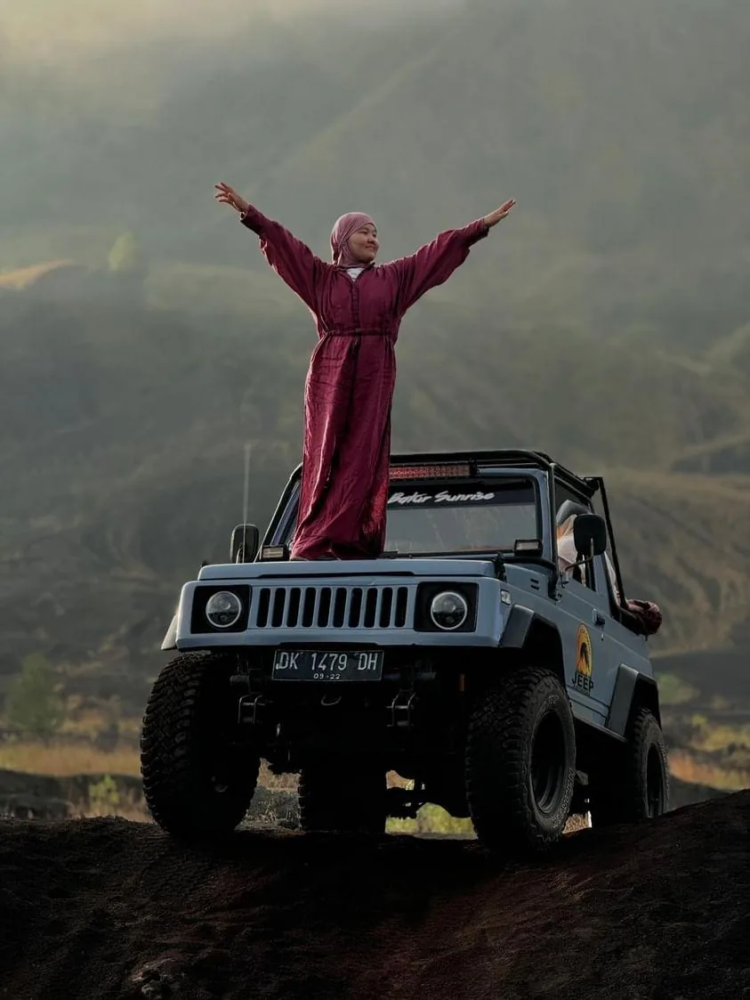
Jeep Day TripDiscover Mount Batur’s volcanic landscape on a scenic 4WD Jeep adventure.
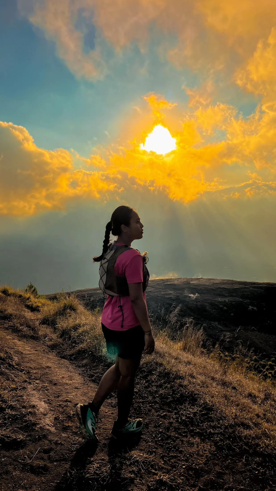
Sunset TrekkingEnjoy golden-hour views and a memorable Mount Batur sunset trek with a local guide.
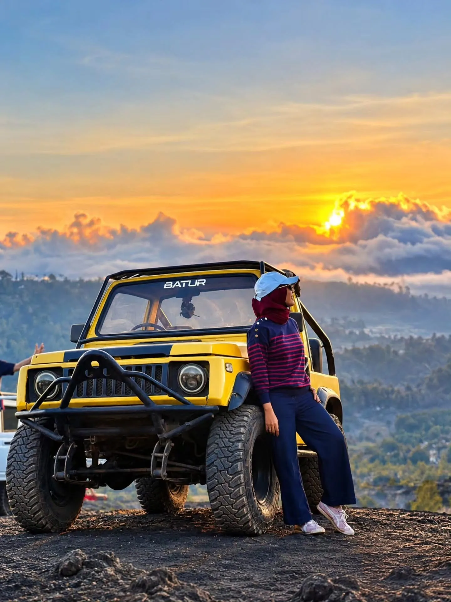
Sunset Jeep TourTake in Mount Batur’s sunset scenery by Jeep with a choice of volcanic routes.
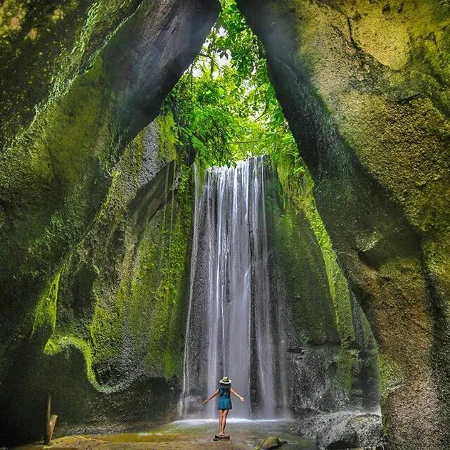
WATERFALL EXPEDITIONDiscover Bali’s beautiful waterfalls with private transport and an experienced local guide.
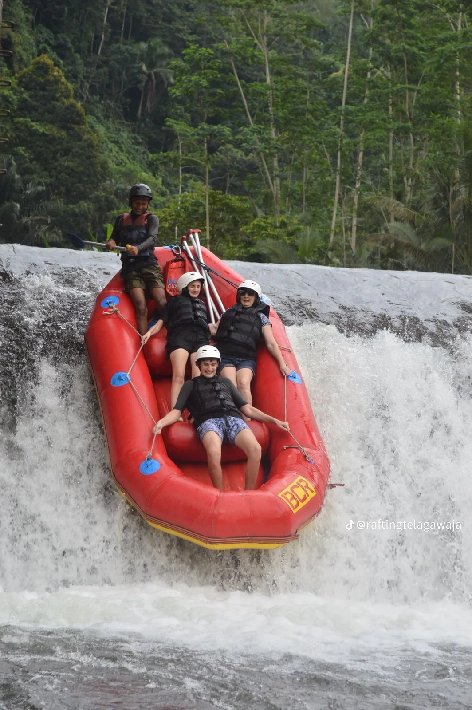
WHITE WATER RAFTINGEnjoy an exciting river rafting adventure surrounded by Bali’s tropical scenery.
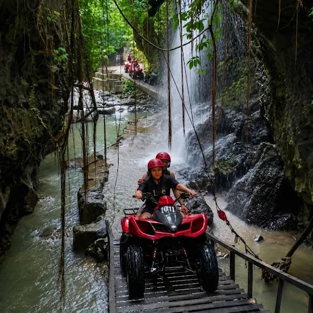
QUAD BIKE ATVRide through jungle tracks, muddy trails and exciting off-road scenery on an ATV.
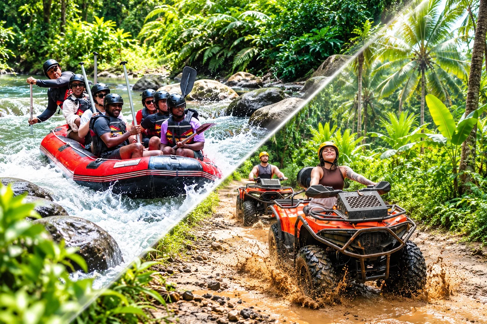
ATV + RAFTINGCombine an off-road ATV ride with an exciting Ayung River rafting experience.
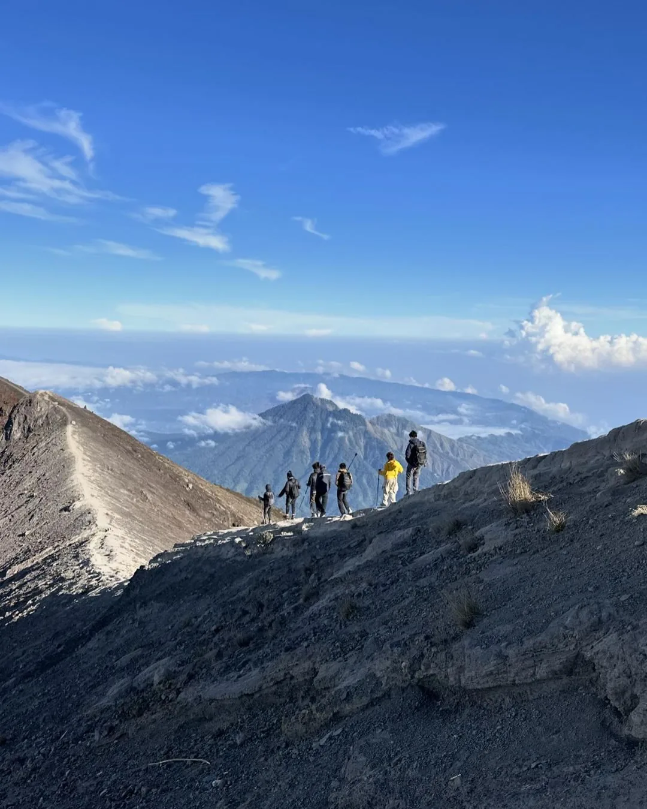
SUNRISE TREKKINGChallenge yourself with a Mount Agung sunrise trek and sweeping mountain views.
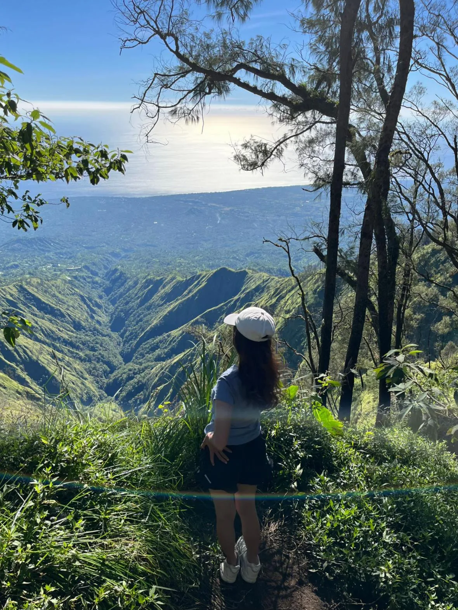
JUNGLE TREKKINGExplore Mount Abang’s peaceful forest trails and enjoy beautiful highland scenery.
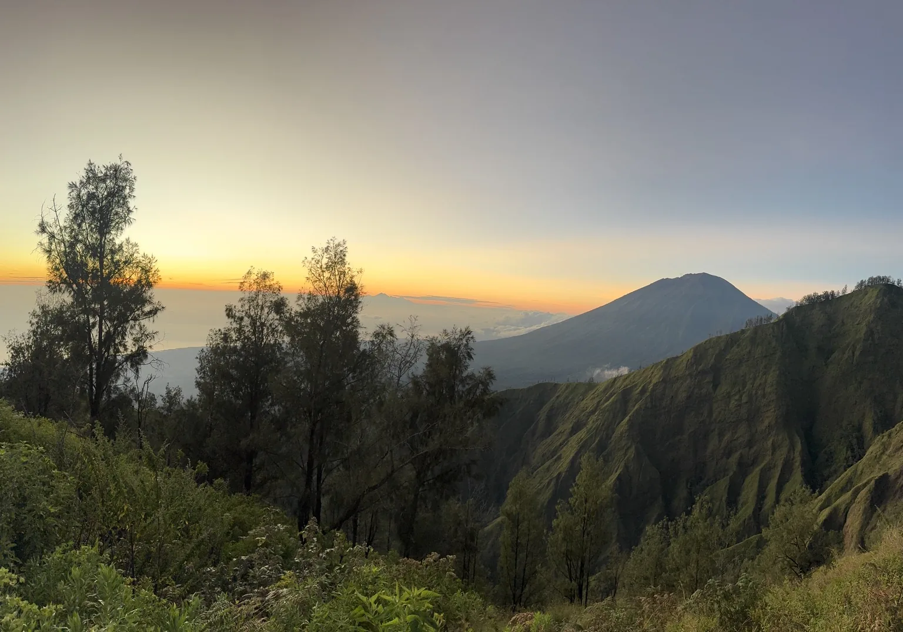
SUNRISE TREKKINGDiscover Trunyan Hill at sunrise for a quieter trek and panoramic views of the Batur caldera.
YOUR EXPERIENCE MATTERS
Share your experience with AWAN TREKKING and help future adventurers plan their journey.
There are no guest reviews here yet. If you have joined one of our tours, you can share your feedback using the button below.
Reviews submitted here are saved in this browser on this device. They are not automatically sent to AWAN TREKKING or shared with other visitors.
Pilih opsi ini jika Anda datang sendiri ke lokasi. Sangat disarankan bagi tamu yang menginap di Songan atau Toya Bungkah, serta tamu yang membawa sepeda motor dan ingin langsung menuju titik pertemuan.
Jl. Pendakian Gn. Batur, Batur Tengah, Kec. Kintamani, Kabupaten Bangli, Bali.
Get Directions – Google MapsPilih layanan ini jika Anda ingin dijemput langsung dari hotel atau vila menggunakan mobil privat, lalu diantar ke titik awal pendakian.
Biaya transportasi menyesuaikan area penjemputan. Nama hotel dan alamat penjemputan diminta saat mengisi formulir pemesanan.
Detail penjemputan akan dikonfirmasi melalui WhatsApp sehari sebelum aktivitas.
Choose Hotel Pick-UpTips: Jika menginap di Songan atau Toya Bungkah, atau membawa sepeda motor sendiri, kami menyarankan Anda memilih Meeting Point agar bisa langsung menuju lokasi pertemuan. Jika membutuhkan mobil penjemputan dari hotel atau vila, pilih Hotel Pick-Up.
Enjoy a private sunrise trek with a local guide. Select your date, number of participants, and meeting point or hotel transfer to review your estimated total before booking.
Have questions about trekking preparation, hotel pick-up, group bookings, or a customized tour? Message our team on WhatsApp and we’ll help you plan your experience.
Halaman khusus pemesanan. Periksa ringkasan pilihan Anda, lalu lengkapi data diri untuk menyiapkan pesanan.